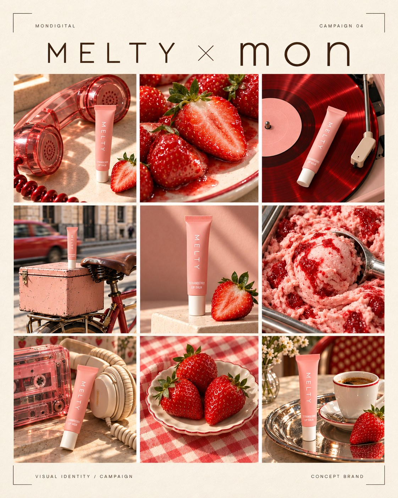

Konsept marka / AI film · Görsel dünya / 12 sn
MELTY
Bir kare de kendine.
Fikir
Bir fotoğraf kabinindeki küçük mola. Dudak balmı, kadife perde ve fotoğraf şeridiyle gündelik bir ürün kişisel bir anın parçası oluyor.
Çalışmanın kapsamı
Karakter ve mekân tasarımı, AI destekli sahne ve hareket üretimi, kurgu.
Konsept marka çalışması · Ticari müşteri işi değildir.
Böyle bir proje konuşalım ↗
Yaratıcı kararlar

